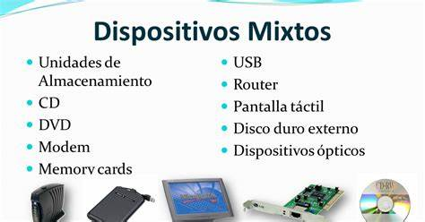

vv
La Computadora Y Sus Partes
¿Qué es la computadora?
Una computadora es un dispositivo informático que es capaz de recibir, almacenar y procesar información de una forma útil. Una computadora está programada para realizar operaciones lógicas o aritméticas de forma automática.

La enorme cantidad de componentes de una computadora pueden agruparse en dos categorias separadas, que son:
Hardware y Software
- Hardware:
Hardware es la parte física de un ordenador o sistema informático. Está formado por los componentes eléctricos, electrónicos, electromecánicos y mecánicos, tales como circuitos de cables y luz, placas, memorias, discos duros, dispositivos periféricos y cualquier otro material en estado físico que sea necesario para hacer que el equipo funcione.
- Software:
Software es un término informático que hace referencia a un programa o conjunto de programas de cómputo, así como datos, procedimientos y pautas que permiten realizar distintas tareas en un sistema informático.
Comúnmente se utiliza este término para referirse de una forma muy genérica a los programas de un dispositivo informático, sin embargo, el software abarca todo aquello que es intangible en un sistema computacional.
Hardware
- Procesador:
El procesador es el cerebro del sistema, justamente procesa todo lo que ocurre en la PC y ejecuta todas las acciones que existen. Cuanto más rápido sea el procesador que tiene una computadora, más rápidamente se ejecutarán las órdenes que se le den a la máquina. Este componente es parte del hardware de muchos dispositivos, no solo de tu computadora.

- Memoria Ram:
En informática, la memoria RAM (acrónimo de Random Access Memory, o Memoria de Acceso Aleatorio) es un tipo de memoria operativa de los computadores y sistemas informáticos, adonde va a ejecutarse la mayor parte del software: el propio sistema operativo, el software de aplicación y otros programas semejantes.

- Tarjeta Madre
Se trata de una tarjeta de circuitos impresos que funciona como un medio de conexión entre los circuitos electrónicos, el microprocesador, la ROM, los circuitos electrónicos de soporte y las ranuras especiales también llamadas como slots. Estas dan paso a la conexión de otras tarjetas adaptadas ya que posee diversos conectores para hacer posible esta acción.
- Fuente de Alimentacion
Una fuente de alimentación es un componente o un dispositivo que suministra energía a una carga eléctrica, adaptando la forma, el voltaje y la corriente de la energía disponible a las necesidades específicas del dispositivo o los dispositivos

- CPU
Ejecuta las instrucciones que da el sistema operativo y administra lo que el usuario transmite a través de los diversos programas informáticos.
- Dispositivos de Salida
Gracias a ellos se muestran los resultados al usuario. Por ejemplo, están los monitores, impresoras y cualquier elemento que pueda servir para ver el trabajo realizado.
- Dispositivos Mixtos
Elementos en los que entra y sale información. Cabe destacar en este grupo las placas de red, modems, puertos, etc.

Software
- Software de Aplicacion:
En informática, se entiende por software de aplicación, programas de aplicaciones o en algunos casos aplicaciones, al conjunto de los programas informáticos generalmente instalados en el sistema por el usuario, y diseñados para llevar a cabo un objetivo determinado y concreto, de tipo lúdico, instrumental, comunicativo, informativo, etc.

- Software de Sistemas:
En informática, se conoce como software de sistema o software de base a la serie de programas preinstalados en el computador o sistema informático y que permiten interactuar con el Sistema Operativo (el software que rige el funcionamiento del sistema todo y garantiza su operatividad), para dar soporte a otros programas y garantizar el control digital del hardware.

- sistema operativo:
Se le llama sistema operativo de software principal como también el conjunto de programas que tiene un sistema informático con la finalidad de manejar los recursos del hardware y permitir servicios a los programas que utilizan aplicación de software, estos funcionan de manera privilegiada comparándose con los demás.
- Lenguaje de Programacion:
Este es el tipo de lenguaje formal que se crea para resolver procesos que pueden ser hechos por máquinas computarizadas. Se crean con la finalidad de que estos programas tengan el control del comportamiento lógico y físico de la máquina, a fin de que puedan manejar algoritmos con precisión, casi parecidos al modo de comunicarse de los humanos. Está compuesto por un convenio de reglas sintácticas, semántica y símbolos que expresa su significado y estructura en todas sus expresiones y elementos.

- Paquetes de Software:
Un paquete de software es un conjunto de programas que son distribuidos complementariamente. Un motivo del porqué se distribuyen de esta manera es debido a que la implementación de uno requiere de la intervención del otro, aparte que ambos tienen objetivos que se relaciona estratégicamente en el área de la mercadotecnia.
Existen muchos sistemas operativos actualmente que incorporan y desincorporan paquetes evitando que se instalen programas en el dispositivo que impiden el funcionamiento de otros en el paquete.
El sistema de gestión de paquetes también se utiliza para dejar las dependencias de los paquetes: si uno de estos paquetes se recuesta en otro, el paquete instalar el primero.
- Drivers:
También es llamado controlador o manejador de dispositivo y se define como el programa informático que posibilita al sistema operativo entrar en conectividad con algún periférico, creando una abstracción del hardware y permitiendo una interfaz que puede estar estandarizada a fin de utilizar el dispositivo. Es una herramienta clave del software si la cual el hardware no se pudiese utilizar.
0
Menú principal